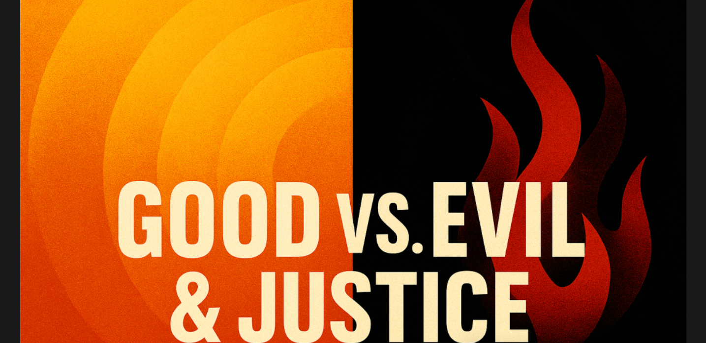
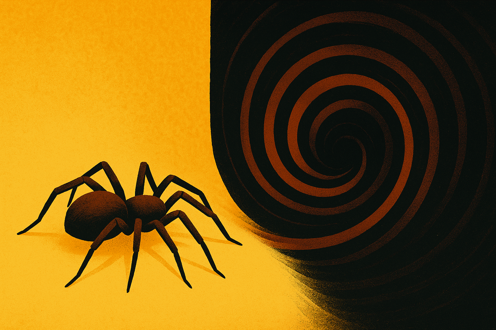
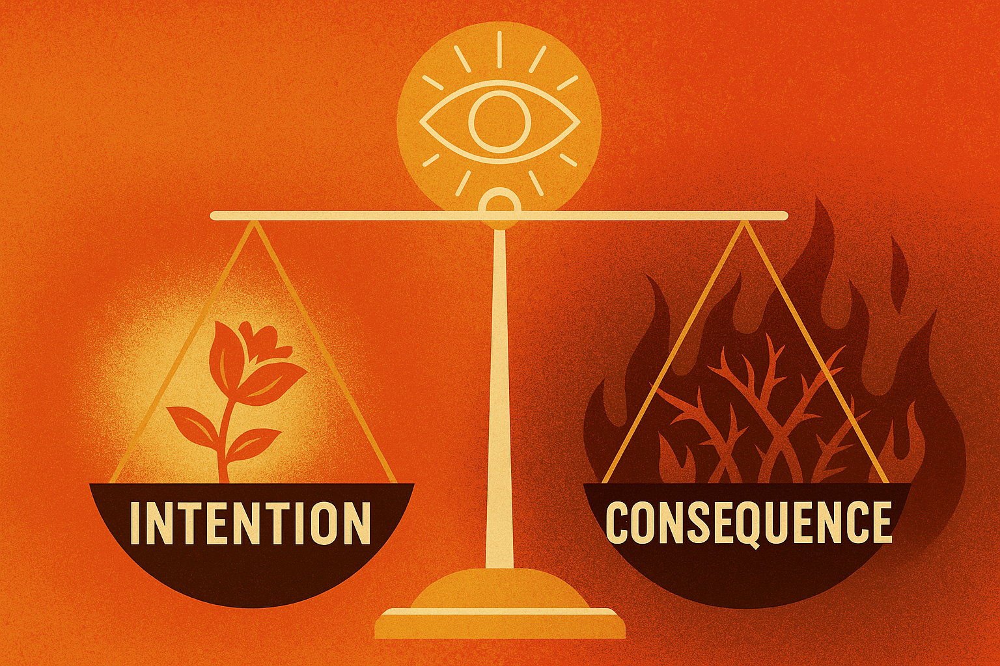
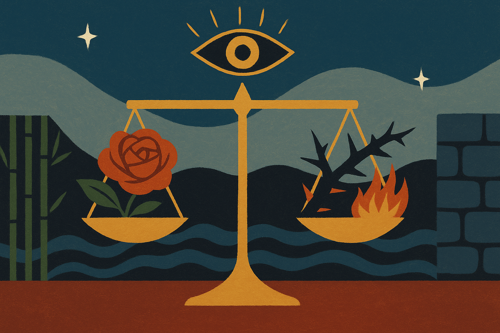
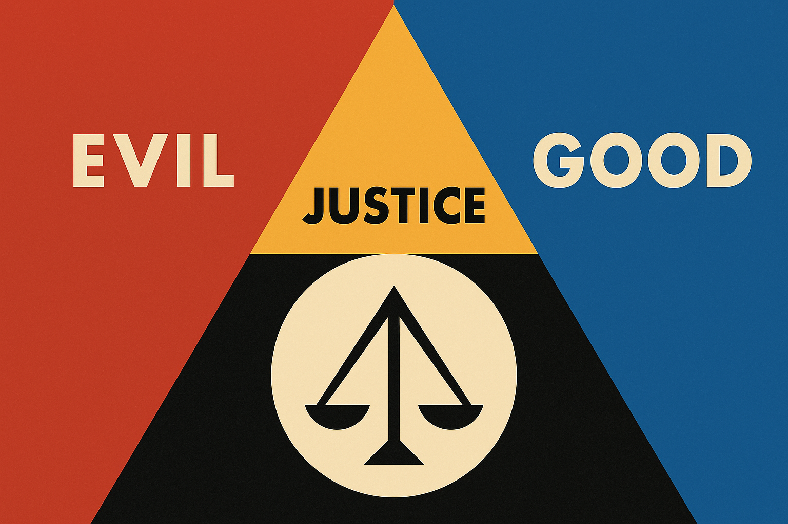

Wherever Philosophy Takes You (part 2: Good vs. Evil & Justice)

—A spontaneous discussion on philosophy topics that I love
Before the official text begins, I just want to tell you the overall structure of "Discussions on Philosophy": it is a ten-thousand word discussion on all the philosophical topics that I love. Today the topics are GOOD VS EVIL and JUSTICE. I would have loved to post the 10,000 words all in one go, but I had to divide the essay into parts so that it would be easier to finish (each part is around 1,000 words). But don't worry, after posting all of the parts separately, I will post a final D&T with the complete 10,000 words so that you have a completer & more natural version of my original text, without it being divided into parts. I think this is the best thing I've ever written, so...yeah.😬
(Also, the introduction that you are about to read is the intro for the entire 10,000 words, not just for the good, evil, justice topics)
*This introduction was also in part 1, so if you have read part 1 before, you can skip this*👇
It's amazing how out of a single sentence, "Everything is made of water", stems an entire branch of universal skepticism that winds back centuries and continues to push the boundaries of modern thinking now. We're talking about philosophy here.
Philosophy encircles every type of intellectual wonderment possible: phycology, morality, discovery, logic, paradox, religion, and even the origins and purposes of science and math. The earliest vein of this study could be traced back to Thales, the Greek philosopher who famously claimed that "everything was made of water". But as philosophy evolved, so did its debates, contradictions and heat, though one intellectually exhilarating truth remains: Philosophy is about concepts, and in her eyes, everything is a concept. This is why I love philosophy (for now), and why I'm writing this sentence. Because I want to explore, spontaneously, every single philosophical concept (around eight) that I am personally interested in, ranging from ethical dilemmas to perceptions of time, the core of religion, the meaning of color, beauty and love, evil and good, and finally to the word "Justice" for it carries a weighty promise. I want to explore my own thoughts and opinions upon these iconic topics, and I'm quite excited to dive into their interconnections and conceptual ingenuities.
Let's talk about it. (!!!!!)
Good vs Evil
I do not know what is good. I do not know what is evil. Both are completely subjective concepts; do not tell me you can completely define them, because no one can. NO ONE CAN. (No one that I know, at least.)
Dragging back our old friend, religion, she can tell you in many shapes and forms exactly how to punish the bad and reward the good. For example, Christianity banishes the evil, the malicious and the selfish to hell, while in Greek mythology, Hades expels people to a similarly dreaded Underworld. Rebirth, incarnation and inner tranquility are equally abundant ways for reward and punishment.
But now we come to the question: What is good? What is evil? What is the social scale on which God and the gods weigh a person's virtues?
There is an iconic philosophical subject that discusses this unweighable ring of cause, effect and consequence. There is a woman, it tells, washing her hands at the sink. She sees a spider skuttling on the sink next to her. Out of kindness, the woman sets the spider onto the ground, telling herself: "He'll be able to get out of the bathroom that way." But once set on the floor, the spider is sucked into an air vent; it would be inevitable once he's on ground level. The spider died.
Should the woman be made directly responsible for the spider's death? She moved him out of kindness, but killed him as the effect. Her intentions were good, but the results were evil. The true question is: Which is more important, intention or consequence? Most justice systems of the world punish the consequence but relent on the intentions.

What about God?
Does God judge consequences fully, without relent, or does God concentrate instead on cause, which might be a truer mirror into a person's virtues? Or is it a mix of both, an analytical eye on cause and effect, intention and consequence, thorn and bud?
From the eye of intention & consequence, woman & spider, we view:
Confucianism is a Chinese belief system that believes all humans were born good, with the evil having been corrupted by the blemishes and maliciousness of life. Meanwhile, its polar opposite, Legalism, believes that all humans were born evil, and that strict restrictions and legal punishments must be reinforced to reign in the corruption of human nature.
These contradicting beliefs present an extreme yet conceptual exploration of good versus evil. I believe that human nature could not be as easily defined as good or evil, unlike what Confucianism and Legalism claim, but my views lean largely towards the ideals of Legalism, particularly on the argument that all humans are born evil. But we come once again to the dilemma of intention and consequence: what is evil, cause or effect? Perhaps the definition of evil changes through centuries, depending on the social and religious perceptions of it. Regardless, below is my line of reasoning that led to the conclusion that (humans are born evil rather than good):
- Individual human nature is born the second a child is conceived.
- After a child is conceived, she/he cries, throws tantrums and needs constant care in order to be nurtured into a societally deemed normal growth.
- Crying, throwing tantrums, and needing constant care are not acts of evil, but the core of the consequences of these actions are selfish.
- It is not the newborn child's fault. But no matter the intentions, the act affected the child's guardian/guardians….
- Which, societally, fits the peg of selfishness, which is often deemed a minor act of "evil".
- As a child grows, we see recurring acts of "selfishness" from them, which could be attributed to society's teachings that a child matters more than their parent. The reason/intentions of the selfishness does not matter, because we are looking at this argument from the foundation of effect.
- The child is selfish.
- Therefore, human nature was born selfish, and it often develops selfishly.
I recognize the holes in this reasoning, as it was built entirely on the basis of consequence. (Also, the argument only refers to the typical & middle-class/above society, without acknowledging the exceptions of severe poverty/abuse etc.) So I composed a separate line of reasoning below, from the basis of intentions instead of consequence:
- Individual human nature is born the second a child is conceived.
- After being conceived, the child requires constant care that exhaust their guardians.
- The child does not mean any harm. The child is not thinking about the consequences, nor were they taught to.
- Thoughts that are deemed societally kind, such as sparing trouble for the parents, does not occur to the child, as he/she is still an infant.
- Therefore, the child is free from blame.
- Societally & objectively, without the boundary of age, the child has not done anything "good".
- Reasonably, the child couldn't have done anything "good", nor could they have meant to be "selfish." Free of blame does not mean good. Nor does purity/ignorance, in fact, ignorance has caused some of the history's largest massacres.
- The child is neither good nor evil.

Of course, both of these reasonings that I presented are extreme, and from the sole standpoints of intention and consequence. The meaning of good and evil is still left up in the air. Maybe at the end of the day, living a simple life without crime or harm is just the best way to honor human nature's true goodness, the final justice of society's conscience.

Justice: the scale on which we weigh human nature
Now we come to the other side of the scale: Justice. Putting aside the meaning of good and evil, what's more important is how we act on them, which is (surprise, surprise) called justice. Human nature is the bud, and justice is the thorn. Justice supports the basis of human interaction and satisfies an innate conscience inside the each of us--if we were to believe that human nature was conscience. Justice is paper and ink, cause and effect, act and consequence, a simple transaction of humanoid leadership that winds back centuries and dominates our virtues now. If good and evil were the fabric, justice is the needle.
The question is, how do we wield that needle?
The fabric of justice is ebbing, constantly moving and changing and shifting, a never-ending sea of punishment and reward, good and evil, black and white, a constant wonderment over that gray area we all hawk after; justice is the most logical form of moral consequence, the most delicate type of humanoid reward, and yet the thinnest tightrope human kind has ever yet to walk on.
Justice could be legal; it could be within the societally approved eye of court—in fact, it defines court. It closes loopholes around moral violations and entraps the cleverest of entrappers. But occasionally a loophole slips through, and legal justice becomes invisible in the face of that loophole. That is when technical, social and moral justice comes into play.
A few decades ago, Marriane Bachmeier took the route of vigilante morality by fatally shooting the inadequately punished murderer of her seven-year-old daughter in the face of the judge and court. Some years later, 200 villagers from a rural Quechua village captured a cultist and buried him alive under the corpses of his victims. And recently, Luigi Mangione is supposed to have committed a viral case of vigilantism in the face of the unjust health care system of U.S. Vigilante justice has recurred throughout human history, each time an act of debatable resistance against the unjust legal, political or social structures.
Is vigilante justice just? Personally, I don't care how the court of law punishes vigilantism, killing and torturing a serial killer the same way that he did his victims does not raise a single ethical hair on my arm, though if vigilantism were to be overly glorified or rampant, our legal society would fall apart and so would, by default, the concept of vigilantism: after all, vigilantism is the idea of seizing justice when the court fails to do so. How will vigilantism exist if there was no court to fail it? And to be more conceptual, is it worth becoming a monster to punish the monster?
No complete justice could be achieved. There is no justice in a serial killer sentenced to life in prison, nor is there in ten years of punishment for decades of human trafficking. I doubt there is justice either in the shooting of a CEO of a company that contributes to the corrupt political system. The fact is, there isn't a completely elegant, loop-hole free and ethical solution of justice that could be formed into a system; and a system is necessary, or else we would become Nazis wielding the cover of unctuous righteousness.
If we were to instead adopt the ancient belief "an eye for an eye", when a serial killer would be tortured and executed the exact same way as his victims, ethical concerns would not be raised but what would be raised are social arguments of court corruption & bias that often result in false accusations and trials.
On the other hand, Plato raised the ideal that instead of physical discipline towards criminals, education should be provided, which Plato believes is the ultimate form of legal efficiency.
But that ideal contradicts with a prevalent interpretation of justice: that justice consists of whatever is to the advantage of the stronger, meaning it caters to whoever prevails in the face of society. If we were to apply Plato's ideal to this, then justice would be catering largely towards the criminal instead of the victim, which could lead to potential social dilemmas. Personally I disagree that justice means catering to the strongest, because even though the legal system does follow that pattern, the purest justice lies in punishing evil and rewarding good.

Now we come back to a full circle: what is good? What is evil? And should consequence or intention matter more in order to achieve the most efficient form of justice?
Maybe there is no justice. But we are owners of our nature, and harnessing the conscience inside of us will eventually come together and outrace the foul, ugly and broken of the human mind.
Maybe there is no justice. But by actively seeking to push away the evil inside of us all, the act of seeking justice will become justice.
To be continued... (next week's topic: Ethical Dilemmas!!!)
← Back to Blog